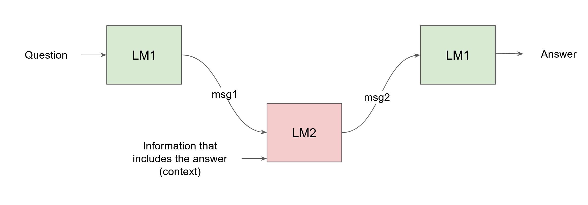

Matéo Mahaut
I'm Matéo, a second year PhD student in the COLT group at Universitat Pompeu Fabra under the supervision of Marco Baroni. I'm interested in multi-agent cooperation, and am looking at it from the perspective of communicating foundation models - using emergent communication and multi-agent reinforcement learning. Before that, I got my engineering diploma at the École Nationale Supérieure de Cognitique in Bordeaux, and interned at the FLOWERS Inria lab, and the Institut de Neurosciences de la Timone in Marseille.
News
- July 14th 2023- I am going to the 2023 Lisbon Machine Learning Summer School.
- July 1st 2023- We are organising the second edition of the Rest-CL PhD retreat!
- June 31st 2023- I presented the extended abstract version of our referential communication paper at AAMAS 2023.
- April 11th 2022- I am co-organising the Rest-CL PhD retreat with COLT and DMG-UvA PhDs.
Projects
Language Model to Language model communication for cooperation
Ongoing work, feel free to contact me with questions and ideas!
(WIP) Referential Lewis game style communication is the go-to in emergent communication research. We aim to scale this up by working not on a purely referential system, but on goal based interactions. In our initial setup, two large language models take part in a multi-turn conversation to answer a question which neither could answer individually. While communication itself remains largely unsupervised, we reward both agents for goal success. We expect that a more complex communication setting will push the emergence of language properties for now lacking from emergent communication and large language models.
Referential communication in pre-trained populations
ArXivThis project looked at whether very different state of the art foundation models could build a common language for referential communication. Our results show that a common representation can very rapidly emerge, and that those protocols can generalise in a variety of ways. They can communicate about unseen objects, resist to a variety of perturbations, and even manage some discrimination between objects they were trained to see as belonging to the same class. While this project is being reviewed (you can find the preprint on ArXiv), we are working on additional analysis of the communication protocols, and considering other extensions :).
Publications
Referential communication in heterogeneous communities of pre-trained visual deep networks
Mahaut, M., Franzon, F., Dessì, R., & Baroni, M. (2023). Referential communication in heterogeneous communities of pre-trained visual deep networks. arXiv preprint arXiv:2302.08913.
ArXiv GitHub PosterSocial network structure shapes innovation: experience-sharing in RL with SAPIENS
Nisioti, E., Mahaut, M., Oudeyer, P. Y., Momennejad, I., & Moulin-Frier, C. (2022). Social network structure shapes innovation: experience-sharing in RL with SAPIENS. arXiv preprint arXiv:2206.05060.
ArXivTeam performance analysis of a collaborative spatial orientation mission in Mars analogue environment
Prebot, B., Cavel, C., Calice, L., Mahaut, M., Leduque, A., & Salotti, J. M. (2019, October). Team performance analysis of a collaborative spatial orientation mission in Mars analogue environment. In 70th International Astronautical Congress (p. 7).
Researchgate